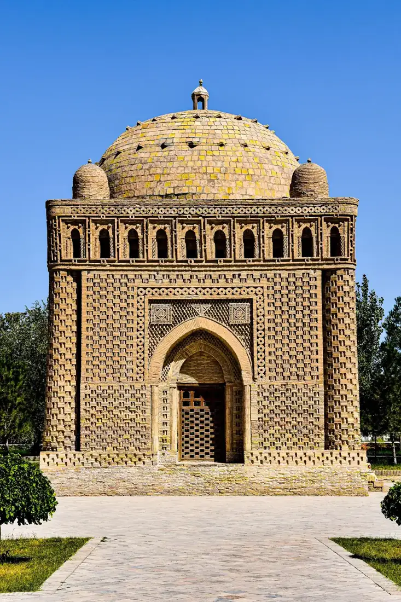
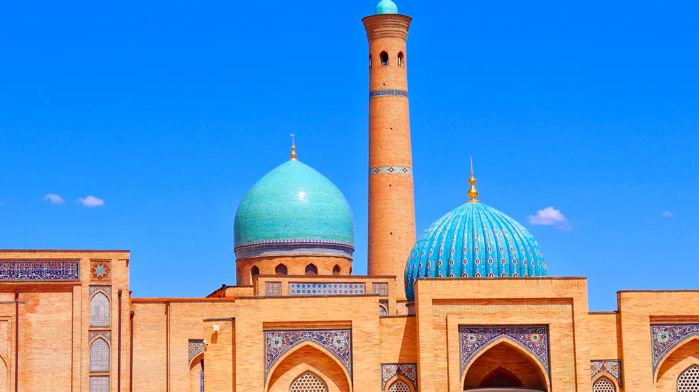

Эң жакшы баа1 күн
01
Эң жакшы баа1 күн
01Ташкент боюнча тур
ТашкентБорбордо бир күн: Хазрати Имам, Чорсу базары, метро жана Амир Темир аянты
баштап…бир адамга
Турду көрүү→
Өзбекстан боюнча жеке жана кичи топтук турлар — Самарканд, Бухара жана Хиванын көгүлтүр куполдору, чөлдөгү боз үй лагерлери, тоо көлдөрү жана эң жылуу меймандостук. Баарын биз пландайбыз, сиз жөн гана саякаттайсыз.
Өзбекстан жөнүндө көбүрөөк билүүКичинеден баштаңыз же толук жолду басыңыз — ар бир турга лицензиясы бар гид, транспорт жана 24/7 колдообуз кирет.
Өзбекстан менен биринчи таанышуу үчүн идеалдуу — Ташкентте бир күндөн Самарканд, Бухара же тоолор менен төрт күнгө чейин.
Эң жакшы баа1 күн
01Борбордо бир күн: Хазрати Имам, Чорсу базары, метро жана Амир Темир аянты
 Эң жакшы баа3 күн
02
Эң жакшы баа3 күн
02Борбор жана Регистан үч күндө, Afrosiyob ылдам поезди менен

Эң жакшы баа4 күн 03Жибек жолунун үч улуу шаары төрт күндө ылдам поезд менен
 Эң жакшы баа4 күн
04
Эң жакшы баа4 күн
04Чимган, Амирсой жана Чарбак көлү плюс Регистан — төрт күн
Эң сүйүктүү программаларыбыз: Жибек жолунун толук тарыхы, жогорку класстагы мейманканалар жана ар бир майда-чүйдөсү уюштурулган.
 Фирмалык8 күн
01
Фирмалык8 күн
01Хива, Бухара, Самарканд жана Ташкент — ар бир ишемби Хивадан башталат
 Фирмалык5 күн
02
Фирмалык5 күн
02Жибек жолунун эки бермети беш күндө
 Фирмалык10 күн
03
Фирмалык10 күн
03Хивадан Самаркандга, чөлдөгү боз үйдө бир түн менен

Фирмалык7 күн 04Улуу имамдарга жана суфий устаттарга зыярат
Идеалдуу сапарыңызды көрбөй жатасызбы? Жубайлар, үй-бүлөлөр жана топтор үчүн жеке маршруттарды түзөбүз.
Шаарлар, маданият жана табият жөнүндө кыска тасмалар — саякатка чейин көрүңүз.
Өзбекстандын Туризм комитетинин расмий каналынан жана эл аралык медиадан (Euronews, BBC, Insider, Eater) видеолор · YouTube'дан көрүү →
Жалгыз саякатчылар жана жубайлар үчүн белгиленген жөнөө даталары — англис же орус тилдүү топту тандаңыз, баары уюштурулган.
Гиддин кайсы тили сизге ылайык?
Толук тур сатып албай эле бир кызматты брондоңуз — гид, транспорт, мейманкана, аэропорттон тосуп алуу же eSIM.
 Лицензиясы бар гиддерШаар турлары, музейлер жана толук сапарлар үчүн кесипкөй жергиликтүү гиддер.→
Лицензиясы бар гиддерШаар турлары, музейлер жана толук сапарлар үчүн кесипкөй жергиликтүү гиддер.→ Айдоочусу бар транспортАйдоочусу бар жеке унаа, минивэн же автобус — шаарлар аралык трансферлер, шаар турлары жана бир күндүк сапарлар.→
Айдоочусу бар транспортАйдоочусу бар жеке унаа, минивэн же автобус — шаарлар аралык трансферлер, шаар турлары жана бир күндүк сапарлар.→ Мейманкана брондооБюджетиңизге ылайык мейманканаларды таап, брондойбуз — конок үйлөрдөн 5 жылдыздууга чейин.→
Мейманкана брондооБюджетиңизге ылайык мейманканаларды таап, брондойбуз — конок үйлөрдөн 5 жылдыздууга чейин.→ Аэропорттон айдоочу тосуп алууАты жазылган тактасы бар айдоочу сизди келүү залында тосуп алып, мейманканага жеткирет.→
Аэропорттон айдоочу тосуп алууАты жазылган тактасы бар айдоочу сизди келүү залында тосуп алып, мейманканага жеткирет.→ Аэропорттон гид тосуп алууГидиңиз сизди келүү залында тосуп алат, SIM карта жана акча алмаштырууга жардам берип, сиз менен мейманканага барат.→
Аэропорттон гид тосуп алууГидиңиз сизди келүү залында тосуп алат, SIM карта жана акча алмаштырууга жардам берип, сиз менен мейманканага барат.→ Топтор, иш-чаралар жана MICEКорпоративдик сапарлар, инсентив турлар, конференциялар жана чоң топтук иш-чаралар.→
Топтор, иш-чаралар жана MICEКорпоративдик сапарлар, инсентив турлар, конференциялар жана чоң топтук иш-чаралар.→ Өзбекстан үчүн eSIMКонгондон тартып мобилдик интернет — SIM дүкөнү да, паспорт кезеги да жок.→
Өзбекстан үчүн eSIMКонгондон тартып мобилдик интернет — SIM дүкөнү да, паспорт кезеги да жок.→Кылдат тандалган жергиликтүү адамдар. Чыныгы пикирлерди көрөсүз; Moviy Nomad аркылуу коопсуз брондоп, төлөйсүз.
Жерлерди, түндөрдү, мейманканаларды, транспортту жана гидди тандаңыз — маршрутту картадан жана баанын дароо эсебин көрүңүз.
Түзүүнү баштоо →


Командабыз Өзбекстанда жайгашкан жана ар бир көчөнү, гидди жана жашыруун кенчти билет.
Мейманканалар, поезддер, трансферлер, гиддер жана кирүү билеттери — бир түшүнүктүү пакетте.
Халал тамак, намаз убактысы жана үй-бүлөлөр үчүн ыңгайлуу ыргак.
Англис жана орус тилдүү гиддер; түрк жана араб тилдери сурам боюнча.
Жашыруун төлөмдөр жок — брондоодон мурун эмне кирерин так көрөсүз.
Бүт сапар бою WhatsApp же Telegram'да тирүү адам.
2,5 жыл бою Moviy Travel командабыз 10 000ден ашык саякатчы үчүн сапар уюштурду. Moviy Nomad ошол эле команданы, гиддерди жана айдоочуларды дүйнөнүн бардык бурчундагы коноктор үчүн алып келет — Өзбекстан боюнча лицензиясы бар туроператор (DMC): Хива, Бухара, Самарканд, Ташкент жана башкалар.
✓Лицензиясы бар туроператор — Өзбекстан Республикасынын Туризм комитети, лицензия № 887333
Сапарларыбызды Instagram'да көрүңүз @moviy_travel58K жазылуучу · чыныгы сапарлар жана саякатчылар менен 600+ пост→Саякатчыларыбыздын топтук чатынан чыныгы билдирүүлөр, өзбек тилинен которулган.
Бардык эмгегиңиз жана камкордугуңуз үчүн рахмат. Жылына бир жолу саякаттайм деп убада бердим — сиздер менен, досторум жана үй-бүлөм менен бирге.
Эң сонун тейлөө: айдоочубуз Нодирбек баарына туугандай мамиле кылды, узак жол такыр узак сезилген жок. Эгер дагы эле ойлонуп жатсаңыз — жөн эле барыңыз, өкүнбөйсүз.
Күткөнүбүздөн да жакшы болду. 500 адамды бириктирип, баарын ийгиликтүү уюштуруу — оңой иш эмес. Мындай сапарларды дагы уюштургула!
Өткөн жума чындап унутулгус болду — балким бул менин биринчи сапарым болгондуктан. Сонун таасирлер жана укмуштуу адамдар жөнүндө эскерүүлөр менен кайттым.
Саякатчыларыбыз бөлүшкөн сүрөттөр жана окуялар. Биз менен саякаттадыңызбы? Өзүңүздүкүн кошуңуз!
Азырынча окуялар жок — биринчи болуп бөлүшүңүз.
Көптөгөн өлкөлөрдүн жарандары Өзбекстанга визасыз же жөнөкөй электрондук виза менен келе алышат. Паспортуңуздун өлкөсүн айтыңыз — учурдагы эрежелерди текшерип беребиз.
Жаз (апрель–июнь) жана күз (сентябрь–октябрь) Самарканд, Бухара жана Хива үчүн идеалдуу. Жай тоолор, Чарбак көлү жана Фергана өрөөнү үчүн жакшы; кыш тынч жана арзан.
Ооба. Жубайлар жана үй-бүлөлөр үчүн жеке турларды, ошондой эле топтук турларды жана туристтик агенттиктер үчүн программаларды пландайбыз.
Аймактагы тамактын көбү халал. Программаны намаз убактыларына жана ыйык жерлерге барууга ылайыкташтыра алабыз.
Бизге WhatsApp же Telegram'дан жазыңыз. Программаны жактыргандан кийин брондооңузду тастыктап, төлөм реквизиттерин жөнөтөбүз.
Ооба. Агенттиктер жана топтор үчүн жердеги тейлөөнү жана өнөктөштүк бааларды сунуштайбыз.
Өзүңүзгө ылайыктуу жолду тандаңыз — идеялар, программа жана баа менен жооп беребиз.
+998 97 542 77 99 · Maftuna Artikova